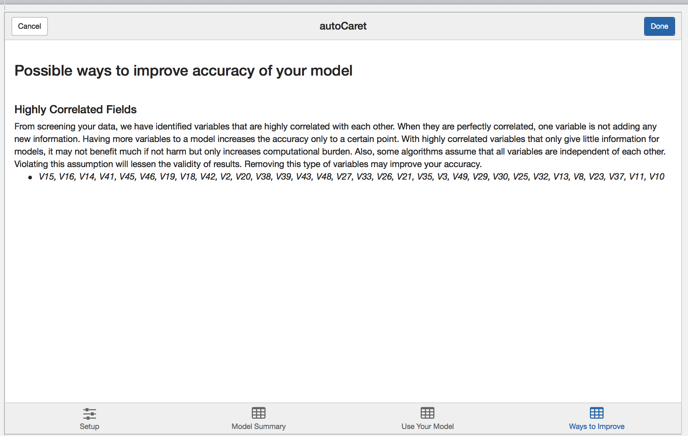

Getting Started
Currently, the autoCaret package is not hosted on CRAN, but can be obtained from GitHub. To do so, first make sure you have devtools installed.
install.packages("devtools")To install the first preview release of autoCaret from GitHub:
devtools::install_github("gregce/autoCaret")Once the autoCaret package is installed, you may access its functionality as you would any other package by calling:
library("autoCaret")Additionally, the RStudio IDE includes integrated support for using autoCaret as an add-in. These features are available in the current Release of RStudio.
Using autoModel
We begin by loading the mlbench package and some example data Sonar which is commonly used to binary classification problems. In this example, we will attempt to distinguish Mines (M) from Rocks (R) using binary classification with an initial dataset of where N=208 and P=60.
As a general rule, when using autoCaret::autoModel defaults, datasets less than 100 mb should yield optimal performance and likely avoid extremely long run times & high memory requirements.
library(mlbench)
library(autoCaret)
# Load the data into Memory from the mlbench package
data("Sonar")
# Summarize Sonar's Size
dim(Sonar)
#> [1] 208 61
# Check out Variable Names
names(Sonar)
#> [1] "V1" "V2" "V3" "V4" "V5" "V6" "V7" "V8"
#> [9] "V9" "V10" "V11" "V12" "V13" "V14" "V15" "V16"
#> [17] "V17" "V18" "V19" "V20" "V21" "V22" "V23" "V24"
#> [25] "V25" "V26" "V27" "V28" "V29" "V30" "V31" "V32"
#> [33] "V33" "V34" "V35" "V36" "V37" "V38" "V39" "V40"
#> [41] "V41" "V42" "V43" "V44" "V45" "V46" "V47" "V48"
#> [49] "V49" "V50" "V51" "V52" "V53" "V54" "V55" "V56"
#> [57] "V57" "V58" "V59" "V60" "Class"Having both the data loaded and having inspected it, we can now make use of the autoCaret::autoModel() function.
In this example, we’d like to try and distinguish Rocks (R) from Mines (R), so we will attempt to predict the Class variable in the Sonar dataframe.
Using it’s defaults, autoModel has 2 arguments we need to specify: df and y.
df is the Dataframe that we’d like to use build a binary classification model, while y is our classification target or response variable. We can use a non-exported package function, autoCaret:::checkBinaryTrait to determine if our y variable is indeed binary. The autoModel functionality will perform this for us as well.
# Manually check that our intended y paramter is indeed binary
autoCaret:::checkBinaryTrait(Sonar$Class)
#> [1] TRUE
# Generate an autoCaret object using the autoModel function
mod <- autoCaret::autoModel(df = Sonar, y = Class, progressBar = FALSE)Exploring an autoCaret object
In the example above, the returned object, mod, is an autoCaret object containing 16 objects. To confirm, we can run the below two commmands:
# Check class of autoCaret object
class(mod)
#> [1] "autoCaret"
# High level
nrow(summary.default(mod))
#> [1] 19Running the summary function on our model output displays a wealth of information about the contents of the object as well as the procedural steps taken during modeling. In our example, we observe:
- that our initial dataset of 208 observation was split into a training and test set containing 167 and 41 observations
- Modeling took .64 minutes and entailed resampling our dataset 10 times
- We used the four default models to create an ensemble.
- Using the ensemble model that was generated to predict on the test set yield predictions with 92% accuracy.
# Use the summary generic to store a summary of autoCaret object
overview <- summary(mod)
#> The input dataset had: 208 observations and 60 predictors
#> ---------------------
#> Prior to model training, the input dataset was split into a training & test set
#> The training set has: 167 observations
#> The test set has: 41 observations
#> ---------------------
#> Overall modeling took: 0.62 minutes
#> During that time the training data was boostrap resampled 10 times
#>
#> The following classification models were used to create an ensemble:
#> - glm
#> - rpart
#> - rf
#> - xgbLinear
#> To learn more about ensemble learing in the context of machine learning, please visit: https://en.wikipedia.org/wiki/Ensemble_learning
#>
#> In the ensemble, the top 5 variables in order from highest to lowest level of relative importance, were:
#> - V11
#> - V12
#> - V9
#> - V10
#> - V36
#> ---------------------
#> When the ensemble model was used to predict on the held out test set of 41 observations it performed as follows:
#>
#> Overall Accuracy: 92.68
#>
#> A confusion matrix demonstrating accuracy is as follows:
#> Reference
#> Prediction R M
#> R 18 2
#> M 1 20
#>
#> Precision: 90
#> Recall: 94.74
#> ---------------------
#> To learn more about Precision & Recall in the context of information retriveal, please visit: https://en.wikipedia.org/wiki/Precision_and_recallWe can also access each of the object variables included in the above displayed summary output via the object itself.
# Print the overview to the console
overview
#> $input_row_count
#> [1] 208
#>
#> $input_col_count
#> [1] 61
#>
#> $train_row_count
#> [1] 167
#>
#> $test_row_count
#> [1] 41
#>
#> $modeling_time
#> [1] 0.62
#>
#> $number_resamples
#> [1] 10
#>
#> $method_list
#> [1] "glm" "rpart" "rf" "xgbLinear"
#>
#> $confusionMatrix
#> Reference
#> Prediction R M
#> R 18 2
#> M 1 20
#>
#> $accuracy
#> [1] 92.68
#>
#> $sensitivity
#> [1] 94.74
#>
#> $specificity
#> [1] 90.91
#>
#> $precision
#> [1] 90
#>
#> $recall
#> [1] 94.74
#>
#> $best_model_results
#> model_name ROC Sens Spec ROCSD SensSD
#> 1 ensemble 0.9337900 0.8095031 0.8953181 0.01498452 0.01089121
#> 2 rf 0.9052501 0.6901687 0.8829980 0.03551813 0.10603065
#> 3 xgbLinear 0.8702916 0.7168320 0.8185311 0.04529174 0.10874655
#> 4 rpart 0.7019527 0.6562942 0.7122567 0.08602055 0.15284623
#> 5 glm 0.6451431 0.5910052 0.6543618 0.08914517 0.08671003
#> SpecSD
#> 1 0.04371527
#> 2 0.06784535
#> 3 0.08614794
#> 4 0.07226794
#> 5 0.10772096
#>
#> attr(,"class")
#> [1] "summary.autoCaret"Predicting new data
So now that we have a sense of how successful our auto modeling approach was, we’d likely want to use the model, mod, we built previously to make predictions on new data we receive.
Because this is an illustrative example, we’lll take a shortcut by just resampling the same data that we used to train on. The main point here is that you can simply pass your autoCaret model object, mod, into the predict() function along with new observations to generate predictions.
#For the sake of example, simulate new data by resampling our original data frame
new <- Sonar[sample(1:nrow(Sonar), 50, replace=TRUE),]
#Make predicitons
preds <- predict(mod, new)
#Print Predictions
preds
#> [1] M R M R R R R M R M R M M R M R R M M R M M M M R M M M R R M R R M M
#> [36] R M M M R R M M M R M M M M R
#> Levels: R MHow well did we do? Well a confusion matrix from the caret package can tell us!
- We only mispredicted one example, for overall accuracy of .98
- Note: we wouldn’t expect this level of accuracy using real data given we resampled from our original training set.
## How well did we do?
caret::confusionMatrix(data = preds, reference = new$Class)
#> Confusion Matrix and Statistics
#>
#> Reference
#> Prediction M R
#> M 29 0
#> R 1 20
#>
#> Accuracy : 0.98
#> 95% CI : (0.8935, 0.9995)
#> No Information Rate : 0.6
#> P-Value [Acc > NIR] : 2.775e-10
#>
#> Kappa : 0.9587
#> Mcnemar's Test P-Value : 1
#>
#> Sensitivity : 0.9667
#> Specificity : 1.0000
#> Pos Pred Value : 1.0000
#> Neg Pred Value : 0.9524
#> Prevalence : 0.6000
#> Detection Rate : 0.5800
#> Detection Prevalence : 0.5800
#> Balanced Accuracy : 0.9833
#>
#> 'Positive' Class : M
#> Using the autoCaret add-in
As an alternative option to the CLI, we provide an intuitive GUI in the form an RStudio Addin.
The add-in may be accessed in two ways:
- Via the Addin menu following loading
autoCaretvialibrary(autoCaret)in a recent release of Rstudio - By running the following non-exported function autoCaret:::autoCaretUI().
Setup Screen
When launched, you’ll be presented with the following screen.

From here you may either:
- Upload a file containing your dataset
- Select the dataset you wish to model from your local
Renvironment
Note: There will be nothing available to list if you have yet to load a data.frame in your local Global environment.
To illustrate the GUI’s use, let’s use the same Sonar dataset from the above examples:

With the Sonar data.frame selected, we’ll be presented with a preview of our data to visually inspect. Once we select the appropriate variable to predict, clicking Run autoCaret will launch the underlying process.
When modeling completes, the other tabs in the Addin are enabled and you may select them to view their contents.
Model Summary
The model summary screen provides an interactive way for you to review the resultant model object created when running autoCaret.

Clicking on the left hand side results visualization provides a layer of interactivity. This is a useful for comparing the results of various models tried during the training phase and for gaining a better intuitive sense of the strengths and weaknesses of your models.
Predicting new data
Like in the section above, we use the new data.frame to simulate predictions.
#For the sake of example, simulate new data by resampling our original data frame
new <- Sonar[sample(1:nrow(Sonar), 50, replace=TRUE),]Having it pre-exist in our Global Environment, we can select it from dropbown on the Use your model tab. Once we compute predictions, they will be saved in our Environment and named autoModelPredictionResult.

Learning more
Finally, during the modelling process, autoCaret runs a variety of diagnostics that help validate the underlying distribution and features of your data prior to pre-processing. Depending on what we find, we surface these as qualitative suggestions on the learning more tab. Feel free to review and incorporate these suggestions in the data cleaning step as you build binary classifiers with autoCaret.
